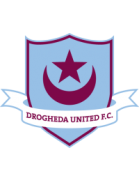
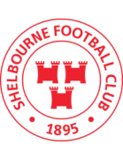
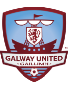
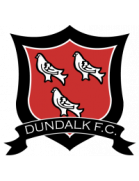
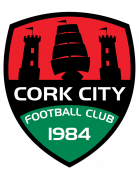
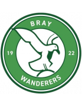
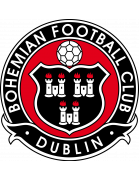
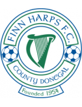

🏆 EURO 2024 Matches
| Date | Fixture |
Odds |
Win |
Result |
Over ⚽ = over 0.5 ⚽⚽ = over 1.5 ⚽⚽⚽ = over 2.5 ... ► |
Alerts Home 🏥 = Considerable injuries 🏥🏥 = Major injuries 📉 = Dip in form Note, you may see injuries when expanding match but no alert here, meaning the model does not consider them important. |
Alerts Away 🏥 = Considerable injuries 🏥🏥 = Major injuries 📉 = Dip in form Note, you may see injuries when expanding match but no alert here, meaning the model does not consider them important. |
|---|
🏆 Copa America 2024 Matches
| Date | Fixture |
Odds |
Win |
Result |
Over ⚽ = over 0.5 ⚽⚽ = over 1.5 ⚽⚽⚽ = over 2.5 ... ► |
Alerts Home 🏥 = Considerable injuries 🏥🏥 = Major injuries 📉 = Dip in form Note, you may see injuries when expanding match but no alert here, meaning the model does not consider them important. |
Alerts Away 🏥 = Considerable injuries 🏥🏥 = Major injuries 📉 = Dip in form Note, you may see injuries when expanding match but no alert here, meaning the model does not consider them important. |
|
|---|---|---|---|---|---|---|---|---|
| Fri. 28 Jun. | Uruguay 02:00 Bolivia Form: LDWW Form: LLLL |
0.84 vs -1.03 | 1.16 | 63% | None | ⚽⚽ 2.18 |
📉 Away team has a dip in form recently |
🌍 Global Matches
| Date | Fixture |
Odds |
Win |
Result |
Over ⚽ = over 0.5 ⚽⚽ = over 1.5 ⚽⚽⚽ = over 2.5 ... ► |
Alerts Home 🏥 = Considerable injuries 🏥🏥 = Major injuries 📉 = Dip in form Note, you may see injuries when expanding match but no alert here, meaning the model does not consider them important. |
Alerts Away 🏥 = Considerable injuries 🏥🏥 = Major injuries 📉 = Dip in form Note, you may see injuries when expanding match but no alert here, meaning the model does not consider them important. |
|
|---|---|---|---|---|---|---|---|---|
| Fri. 28 Jun. | Athlone Town AFC 19:45 Treaty United Form: DDWD Form: DWLW |
1.69 vs -2.39 | n/a | 77% | None | ⚽ 1.61 |
📉 Home team has a dip in form recently | 📉 Away team has a dip in form recently |
| Fri. 28 Jun. | El Ahly Cairo 17:00 Pharco FC Form: WWLW Form: LDLL |
1.69 vs -2.7 | 1.23 | 77% | None | ⚽ 1.63 |
📉 Home team has a dip in form recently | 📉 Away team has a dip in form recently |
| Fri. 28 Jun. | KÍ Klaksvík 18:30 NSÍ Runavík Form: WLLL Form: WDLL |
1.24 vs -1.78 | n/a | 72% | None | ⚽⚽ 2.33 |
📉 Home team has a dip in form recently | 📉 Away team has a dip in form recently |
| Fri. 28 Jun. | Derry City 19:45  Drogheda United FC Form: DDWW Form: LLLD |
1.12 vs -1.96 | 1.3 | 71% | None | ⚽⚽ 2.58 |
📉 Away team has a dip in form recently | |
| Fri. 28 Jun. | Sarpsborg 08 FF 18:00 FK Bodø/Glimt Form: LWLW Form: WLDD |
-1.62 vs 1.04 | 1.71 | 70% | None | ⚽⚽⚽ 3.91 |
📉 Home team has a dip in form recently | 📉 Away team has a dip in form recently |
| Fri. 28 Jun. | Uruguay 02:00 Bolivia Form: LDWW Form: LLLL |
0.84 vs -1.03 | 1.16 | 63% | None | ⚽⚽ 2.18 |
📉 Away team has a dip in form recently | |
| Fri. 28 Jun. | FC San Marcos 21:30 ADA Jaén Form: WLWW Form: WLLW |
0.83 vs -1.72 | n/a | 63% | None | ⚽⚽⚽ 3.08 |
📉 Home team has a dip in form recently | 📉 Away team has a dip in form recently |
| Fri. 28 Jun. | Cobh Ramblers FC 19:45 University College Dublin Form: DWLW Form: DDDW |
0.81 vs -1.47 | n/a | 62% | None | ⚽⚽ 2.08 |
📉 Home team has a dip in form recently | 📉 Away team has a dip in form recently |
| Fri. 28 Jun. | B68 Toftir 18:00 HB Tórshavn Form: DLLD Form: LWLL |
-1.11 vs 0.74 | n/a | 60% | None | ⚽⚽ 2.4 |
📉 Home team has a dip in form recently | 📉 Away team has a dip in form recently |
| Fri. 28 Jun. | NSÍ Runavík 18:30 KÍ Klaksvík Form: WDLL Form: WLLL |
-1.24 vs 0.63 | n/a | 55% | None | ⚽⚽ 2.33 |
📉 Home team has a dip in form recently | 📉 Away team has a dip in form recently |
| Fri. 28 Jun. | SK Brann 18:00 Strømsgodset IF Form: WDLW Form: LLWW |
0.34 vs -0.93 | 1.4 | 37% | None | ⚽⚽ 2.27 |
📉 Home team has a dip in form recently | 📉 Away team has a dip in form recently |
| Fri. 28 Jun. | Järvenpään Palloseura 16:30 Käpylän Pallo Form: WDDL Form: LLDL |
0.29 vs -1.14 | n/a | 34% | None | ⚽⚽⚽ 3.24 |
📉 Home team has a dip in form recently | 📉 Away team has a dip in form recently |
| Fri. 28 Jun. | Cuniburo FC 01:00 Guayaquil City FC Form: WWWW Form: DDDL |
-1.58 vs 0.29 | 1.04 | 33% | None | ⚽ 1.09 |
🏥🏥 Home team has MAJOR injuries | 📉 Away team has a dip in form recently |
| Fri. 28 Jun. | Hamilton Wanderers 04:00 Auckland United FC Form: LLLL Form: WDLD |
-0.87 vs 0.29 | n/a | 33% | None | ⚽⚽ 2.64 |
📉 Home team has a dip in form recently | 📉 Away team has a dip in form recently |
| Fri. 28 Jun. | IK Brage 18:00 Gefle IF Form: LLWL Form: LWLL |
0.28 vs -1.16 | 1.56 | 32% | None | ⚽ 1.5 |
📉 Home team has a dip in form recently | 📉 Away team has a dip in form recently |
| Fri. 28 Jun. | CD Magallanes 01:00 CDP Curicó Unido Form: LWWW Form: DWDW |
0.27 vs -1.25 | n/a | 32% | None | ⚽⚽ 2.09 |
||
| Fri. 28 Jun. | São Paulo Futebol Clube 00:00 Criciúma Esporte Clube Form: WDDL Form: LWDW |
0.25 vs -1.27 | n/a | 30% | None | ⚽ 1.92 |
🏥 📉 Home team has considerable injuries and a dip in form recently | |
| Fri. 28 Jun. | Atlético Ottawa 00:00 Forge FC Form: WWDL Form: WLWL |
0.24 vs -0.81 | 1.05 | 30% | None | ⚽ 1.33 |
📉 Home team has a dip in form recently | 📉 Away team has a dip in form recently |
| Fri. 28 Jun. | Leevon PPK 17:00 FK RFS II Form: LLWL Form: WWWW |
-0.86 vs 0.22 | n/a | 28% | None | ⚽ 1.54 |
📉 Home team has a dip in form recently | |
| Fri. 28 Jun. | Shelbourne FC  19:45  Galway United FC Form: WWLL Form: WWLW |
0.21 vs -0.71 | 2.14 | 27% | None | ⚽ 1.4 |
📉 Home team has a dip in form recently | 📉 Away team has a dip in form recently |
| Fri. 28 Jun. | Kerry Football Club 19:45 Wexford FC Form: LWLW Form: DLLD |
-0.8 vs 0.2 | n/a | 26% | None | ⚽ 1.53 |
📉 Home team has a dip in form recently | 📉 Away team has a dip in form recently |
| Fri. 28 Jun. | FH Hafnarfjördur 20:15 Breidablik Kópavogur Form: WWDD Form: LDLL |
-0.79 vs 0.18 | n/a | 24% | None | ⚽⚽⚽ 3.06 |
📉 Home team has a dip in form recently | 📉 Away team has a dip in form recently |
| Fri. 28 Jun. | FC Kuressaare 17:00 Paide Linnameeskond Form: LDLD Form: LLLW |
-0.86 vs 0.16 | 1.17 | 23% | None | ⚽⚽ 2.41 |
📉 Home team has a dip in form recently | 📉 Away team has a dip in form recently |
| Fri. 28 Jun. | FC Qizilqum 16:00 FC OKMK Olmaliq Form: LDLD Form: WLWW |
-0.7 vs 0.15 | n/a | 22% | None | ⚽⚽ 2.87 |
📉 Home team has a dip in form recently | 📉 Away team has a dip in form recently |
| Fri. 28 Jun. | Sydney FC II 10:30 Marconi Stallions FC Form: LDLL Form: WLWL |
0.14 vs -1.18 | n/a | 21% | None | ⚽⚽⚽ 3.02 |
🏥🏥 📉 Home team has MAJOR injuries and a dip in form recently | 📉 Away team has a dip in form recently |
| Fri. 28 Jun. | Bay Olympic FC 04:00 Western Springs AFC Form: LLWL Form: WWDL |
-0.49 vs 0.13 | n/a | 20% | None | ⚽⚽ 2.38 |
📉 Home team has a dip in form recently | 📉 Away team has a dip in form recently |
| Fri. 28 Jun. | Altay Oskemen 13:00 FK Jetisay Form: DWWW Form: WLWW |
0.1 vs -0.47 | n/a | 18% | None | ⚽ 1.23 |
📉 Away team has a dip in form recently | |
| Fri. 28 Jun. | Dynamo Brest 18:45 FK Vitebsk Form: WLLW Form: WWDL |
0.1 vs -0.61 | n/a | 18% | None | ⚽ 1.93 |
📉 Home team has a dip in form recently | 📉 Away team has a dip in form recently |
| Fri. 28 Jun. | Smouha SC 17:00 Pyramids FC Form: DLWL Form: LLWL |
-0.89 vs 0.09 | 1.48 | 18% | None | ⚽⚽ 2.0 |
📉 Home team has a dip in form recently | 📉 Away team has a dip in form recently |
| Fri. 28 Jun. | FC Arys 13:00 FK Ulytau Form: WLLL Form: WDWW |
-0.63 vs 0.07 | n/a | 15% | None | ⚽ 1.65 |
📉 Home team has a dip in form recently | |
| Fri. 28 Jun. | HK Kópavogs 19:00 KA Akureyri Form: LWLL Form: WLLW |
-0.76 vs 0.06 | n/a | 15% | None | ⚽⚽ 2.39 |
📉 Home team has a dip in form recently | 📉 Away team has a dip in form recently |
| Fri. 28 Jun. | Dundalk FC  19:45 Waterford FC Form: LDWL Form: WLWL |
0.05 vs -0.97 | 2.28 | 14% | None | ⚽⚽ 2.01 |
🏥🏥 📉 Home team has MAJOR injuries and a dip in form recently | 📉 Away team has a dip in form recently |
| Fri. 28 Jun. | Cork City FC  19:45  Bray Wanderers Form: DLDW Form: LDWL |
0.05 vs -1.25 | n/a | 14% | None | ⚽ 1.13 |
📉 Home team has a dip in form recently | 🏥🏥 📉 Away team has MAJOR injuries and a dip in form recently |
| Fri. 28 Jun. | AB Argir 18:00 KÍ Klaksvík II Form: LDLD Form: DWLW |
-0.38 vs 0.04 | n/a | 13% | None | ⚽⚽⚽ 3.05 |
📉 Home team has a dip in form recently | 📉 Away team has a dip in form recently |
| Fri. 28 Jun. | ABFF U17 15:30 Dinamo 2 Minsk Form: LLLW Form: DWLL |
-0.63 vs 0.03 | n/a | 12% | None | ⚽ 1.12 |
📉 Home team has a dip in form recently | 📉 Away team has a dip in form recently |
| Fri. 28 Jun. | St. Patrick's Athletic 19:45  Bohemian Football Club Form: WWLD Form: LWDL |
0.02 vs -0.69 | 1.94 | 12% | None | ⚽⚽ 2.2 |
📉 Home team has a dip in form recently | 📉 Away team has a dip in form recently |
| Fri. 28 Jun. | Sligo Rovers 19:45 Shamrock Rovers Form: DWWL Form: LWLW |
-0.88 vs 0.01 | 1.38 | 11% | None | ⚽ 1.54 |
📉 Home team has a dip in form recently | 📉 Away team has a dip in form recently |
| Fri. 28 Jun. | Longford Town FC 19:45  Finn Harps Form: DLDL Form: LWDL |
0.01 vs -0.73 | n/a | 11% | None | ⚽ 1.39 |
📉 Home team has a dip in form recently | 📉 Away team has a dip in form recently |
| Fri. 28 Jun. | ÍA Akranes 20:15 Valur Reykjavík Form: DWLL Form: LLLD |
-0.87 vs 0.0 | n/a | 10% | None | ⚽⚽⚽⚽ 4.22 |
📉 Home team has a dip in form recently | 📉 Away team has a dip in form recently |
| Fri. 28 Jun. | FC Inter Turku 16:00 Vaasan Palloseura Form: WLWD Form: DDWD |
-0.24 vs -0.02 | 2.78 | 10% | None | ⚽⚽ 2.08 |
📉 Home team has a dip in form recently | 📉 Away team has a dip in form recently |
| Fri. 28 Jun. | Odds BK 18:00 Kristiansund BK Form: LLDW Form: LDLL |
-0.05 vs -0.63 | 2.04 | 9% | None | ⚽⚽⚽ 3.14 |
📉 Home team has a dip in form recently | 📉 Away team has a dip in form recently |
| Fri. 28 Jun. | Jalgpallikool Tammeka 17:00 Kalju FC Form: DLWL Form: WDLD |
-0.68 vs -0.06 | n/a | 9% | None | ⚽⚽ 2.52 |
📉 Home team has a dip in form recently | 📉 Away team has a dip in form recently |
| Fri. 28 Jun. | Pärnu JK Vaprus 18:00 Kalev Tallinn Form: DDLL Form: DLLL |
-0.06 vs -0.74 | 1.17 | 9% | None | ⚽⚽ 2.0 |
📉 Home team has a dip in form recently | 📉 Away team has a dip in form recently |
| Fri. 28 Jun. | Slavia Mozyr 17:00 FK Gomel Form: LDDD Form: DWDL |
-0.07 vs -0.59 | n/a | 9% | None | ⚽ 1.73 |
📉 Home team has a dip in form recently | 📉 Away team has a dip in form recently |
| Fri. 28 Jun. | AC Oulu 18:00 Kuopion Palloseura Form: LDWD Form: WLWL |
-0.08 vs -0.47 | n/a | 8% | None | ⚽⚽⚽ 3.3 |
📉 Home team has a dip in form recently | 📉 Away team has a dip in form recently |
| Fri. 28 Jun. | Tromsø IL 20:15 Molde FK Form: LWDW Form: DWLW |
-0.49 vs -0.14 | 2.0 | 7% | None | ⚽⚽ 2.42 |
📉 Away team has a dip in form recently | |
| Fri. 28 Jun. | Helsingborgs IF 18:00 Varbergs BoIS Form: LWWL Form: WDDW |
-0.16 vs -0.68 | 1.96 | 7% | None | ⚽ 1.8 |
📉 Home team has a dip in form recently | 📉 Away team has a dip in form recently |
| Fri. 28 Jun. | Sogdiana Jizzakh 16:00 Dinamo Samarqand Form: LWLW Form: DWLW |
-0.18 vs -0.67 | n/a | 6% | None | ⚽⚽ 2.02 |
📉 Home team has a dip in form recently | 📉 Away team has a dip in form recently |
| Fri. 28 Jun. | Pacific FC 03:30 Vancouver FC Form: LLDD Form: WWLD |
-0.19 vs -0.58 | 1.04 | 6% | None | ⚽ 1.51 |
📉 Home team has a dip in form recently | 📉 Away team has a dip in form recently |
| Fri. 28 Jun. | El Mokawloon SC 14:00 Bank El Ahly Form: LDWL Form: WDDW |
-0.2 vs -0.7 | 2.92 | 6% | None | ⚽ 1.86 |
📉 Home team has a dip in form recently | 📉 Away team has a dip in form recently |
| Fri. 28 Jun. | SD Family Astana 15:00 FC Khan Tengri Form: LLDW Form: DWWW |
-0.3 vs -0.37 | n/a | 4% | None | ⚽⚽ 2.03 |
📉 Home team has a dip in form recently | |
| Fri. 28 Jun. | Club Juan Pablo II 19:00 Deportivo Llacuabamba Form: WLWW Form: WLWW |
-0.48 vs -0.35 | n/a | 3% | None | ⚽⚽ 2.39 |
📉 Home team has a dip in form recently | 📉 Away team has a dip in form recently |
| Fri. 28 Jun. | Deportivo Coopsol 21:30 Universidad San Martín de Porres Form: LWDD Form: DLWD |
-0.47 vs -0.44 | n/a | 1% | None | ⚽ 1.5 |
📉 Home team has a dip in form recently | 📉 Away team has a dip in form recently |
Last updated 05:31:02 2024-06-26
Privacy Policy - 18+. Gamble Responsibly. - Terms